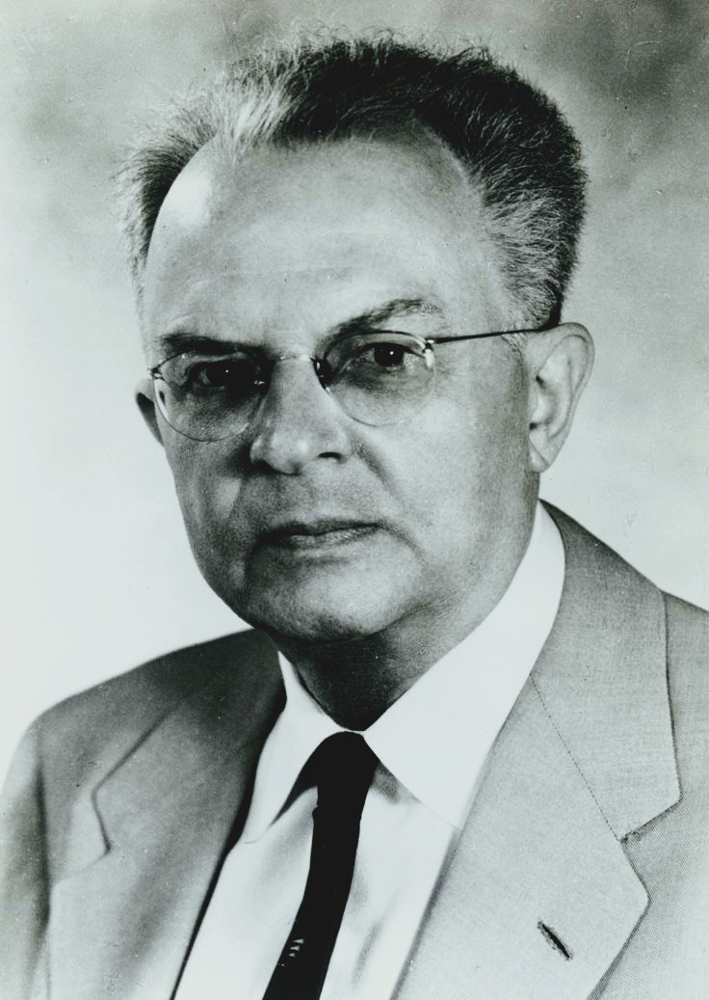
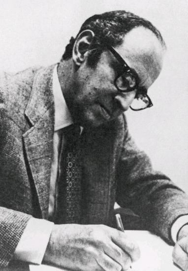
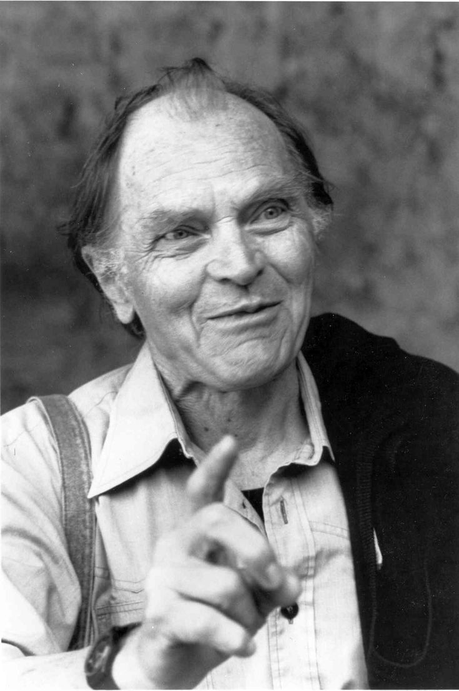
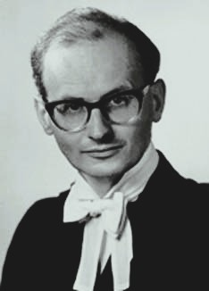

Philosophy of Science examines the foundations, methods, assumptions,
limits, and implications of scientific inquiry. It asks what makes
scientific knowledge reliable, how scientific theories explain the
world, what counts as evidence, how experiments and observations
support hypotheses, and whether scientific theories describe reality
or merely organize experience.
What Is Philosophy of Science?
Philosophy of Science is the branch of philosophy concerned with the
nature, methods, foundations, justification, structure, and limits of
scientific knowledge. It asks what science is, how scientific knowledge
is produced, how scientific claims are justified, and what scientific
theories tell us about reality. Rather than conducting scientific
experiments itself, philosophy of science examines the concepts and
reasoning that make scientific inquiry possible. It therefore asks
fundamental questions such as: What distinguishes science from
non-science? What makes evidence relevant to a scientific theory? How
should competing hypotheses be evaluated? What makes an explanation
scientific? What does it mean for one event to cause another? And when
scientists accept a successful theory, are they justified in believing
that the theory is approximately true?
At its core, philosophy of science investigates how scientific inquiry
turns observations, measurements, experiments, models, and data into
knowledge. Scientific reasoning involves concepts such as evidence,
hypothesis, prediction, confirmation, falsification, probability,
measurement, explanation, causation, laws, theories, and objectivity.
Philosophers of science examine how these concepts work and whether the
methods used by scientists provide reliable grounds for accepting
scientific conclusions. This includes questions about induction and the
problem of induction, deductive reasoning, inference to the best
explanation, scientific experimentation, replication, uncertainty,
statistical reasoning, and the interpretation of evidence. Philosophy of
science therefore helps clarify not only what scientists discover but
also how scientific claims become justified within particular fields of
inquiry.
Philosophy of science also asks what scientific theories actually
describe. When physics refers to electrons, fields, spacetime, or
quantum states, or when biology refers to genes, species, organisms, and
evolutionary processes, are these entities and structures real features
of the world or theoretical constructions that help organize
observations? This leads to important debates about
scientific realism and
scientific anti-realism. Realists generally argue that
successful scientific theories provide genuine knowledge about an
underlying reality, while anti-realist approaches may place greater
emphasis on the observable consequences, predictive success, or
practical usefulness of theories. Related questions concern whether
scientific laws describe necessary patterns in nature, summarize
regularities, or express deeper structural relationships.
Another major concern is the nature of scientific explanation and
prediction. Scientists do more than record what happens; they attempt to
explain why phenomena occur and to predict what will happen under
specified conditions. Philosophy of science therefore examines different
models of explanation, including causal explanation, statistical
explanation, mechanistic explanation, and explanations based on
scientific laws or mathematical models. The concept of
causation is particularly important: correlation does
not automatically establish that one phenomenon causes another, and
identifying causal relationships often requires careful experimental
design, intervention, modeling, or knowledge of underlying mechanisms.
These questions arise across fields ranging from physics and chemistry
to biology, medicine, psychology, economics, and the social sciences.
The field also investigates scientific method itself. Is there a single
scientific method shared by all sciences, or do different disciplines
use different forms of inquiry? Philosophers have examined hypothesis
testing, falsification, confirmation, research programs, paradigms,
models, experiments, measurement, simulation, and historical changes in
scientific practice. The work of philosophers such as Karl Popper,
Thomas Kuhn, Imre Lakatos, Rudolf Carnap, Carl Hempel, and others
contributed to major debates about how science develops and how
scientific theories should be evaluated. These debates also raise
questions about whether scientific progress is cumulative,
revolutionary, theory-dependent, or some combination of these
possibilities.
Philosophy of science is not limited to physics or the natural sciences.
It examines methodological and conceptual questions across many
scientific disciplines, including biology, medicine, psychology,
neuroscience, chemistry, geology, astronomy, economics, sociology, and
the cognitive sciences. Different sciences may rely on different kinds
of evidence, models, explanations, measurements, and levels of
description. Biology, for example, raises distinctive philosophical
questions about species, evolution, function, genes, organisms, and
biological explanation, while psychology and neuroscience raise
questions about explanation, representation, consciousness, behavior,
and the relationship between mental and neural descriptions.
Philosophy of science also examines the social and historical dimensions
of scientific knowledge. Scientific research is carried out by
communities of investigators working within institutions, traditions,
funding systems, professional norms, and systems of peer evaluation.
This raises questions about scientific objectivity, expert disagreement,
replication, scientific consensus, values in science, theory choice,
underdetermination, and the influence of social conditions on research.
Philosophers therefore ask whether scientific objectivity requires
complete freedom from values or whether some values inevitably play
legitimate roles in choosing research questions, evaluating risks,
interpreting evidence, and determining which explanations are worth
pursuing.
Philosophy of science consequently occupies an important position
between philosophy and scientific practice. It does not replace
scientific investigation, nor does it simply repeat established
scientific conclusions. Instead, it critically examines the assumptions,
concepts, methods, forms of reasoning, and standards of justification
through which scientific knowledge is constructed and evaluated.
Studying philosophy of science therefore provides a deeper understanding
of what scientific evidence means, how theories are tested, why
scientific explanations are persuasive, what scientific models
represent, how scientific knowledge changes, and where the limits of
scientific inquiry may lie.
Core Questions in Philosophy of Science
One of the central questions is
What is science? Science includes diverse practices
ranging from controlled laboratory experiments to astronomical
observation, field research, mathematical modeling, historical
reconstruction, and statistical inference. Because scientific
disciplines differ substantially in their methods and objects of study,
philosophers question whether there is one universal scientific method.
The problem of demarcation asks whether there are principled criteria
for distinguishing science from pseudoscience, non-scientific inquiry,
or other intellectual activities.
Another fundamental question concerns
scientific evidence. Scientists rarely establish
theories through deduction alone. Instead, observations, measurements,
experiments, statistical patterns, and successful predictions can
provide varying degrees of support for hypotheses. Philosophers
therefore ask how evidence confirms theories, whether confirmation can
be quantified, and how scientists should reason when observations are
compatible with multiple explanations.
A third question concerns scientific explanation.
Science does more than describe regularities; it often attempts to
explain why phenomena occur. Explaining an eclipse, the inheritance of a
trait, the motion of a planet, or the spread of a disease can involve
very different forms of reasoning. Philosophers have therefore proposed
competing accounts of explanation, including approaches based on laws,
causal mechanisms, unification, counterfactual dependence, and
mathematical or structural models.
Philosophy of science also asks about the
reality of theoretical entities. Scientists routinely
refer to electrons, genes, quarks, gravitational fields, viruses, and
other entities that are not directly perceived in ordinary experience.
If theories involving such entities are highly successful, should
scientists believe that the entities genuinely exist? Scientific
realists generally answer yes, while instrumentalist and empiricist
approaches place greater emphasis on the predictive or observational
success of theories without requiring commitment to all of their
theoretical entities.
Finally, philosophers ask whether scientific knowledge is
objective. Scientific communities develop standards for
measurement, evidence, replication, criticism, and publication, but
scientists are still human beings operating within historical and social
institutions. Questions about theory choice, values, funding,
disciplinary assumptions, representation, and underdetermination
therefore raise difficult issues concerning the relationship between
objectivity and the social organization of science.
The Scientific Method
The phrase scientific method can suggest that every
science follows one fixed sequence of steps, but actual scientific
practice is considerably more diverse. Scientists may formulate
hypotheses, conduct experiments, make observations, construct
mathematical models, compare datasets, develop simulations, search for
anomalies, or revise established theories. The precise methods
appropriate to a scientific problem depend upon the discipline,
available technology, background knowledge, and nature of the phenomena
being investigated.
Hypotheses play a central role in many forms of scientific inquiry. A
hypothesis proposes a possible explanation or regularity that can be
evaluated against evidence. Scientific reasoning may proceed from a
hypothesis toward predictions, followed by observations or experiments
designed to determine whether those predictions are supported. However,
philosophers emphasize that evidence rarely establishes a scientific
hypothesis with absolute certainty. Background assumptions, auxiliary
hypotheses, measurement procedures, and competing explanations can all
influence how evidence should be interpreted.
Scientific inquiry is also characterized by
public criticism and reproducibility. Results are
communicated to other researchers who can examine methods, challenge
interpretations, reproduce experiments where appropriate, collect
additional evidence, and propose alternative explanations. This communal
structure is important because scientific objectivity does not
necessarily require individual scientists to be free from every form of
bias. Instead, institutions of criticism and methodological scrutiny can
help identify and correct errors over time.
Philosophers therefore distinguish between simplified textbook
descriptions of scientific inquiry and the complex practices actually
employed by researchers. Observation, experimentation, deduction,
induction, abduction, simulation, measurement, modeling, and statistical
analysis can all play different roles. Philosophy of science
investigates how these practices fit together and whether there are
general principles that can explain the rationality of scientific
inquiry across different disciplines.
The Problem of Induction
The problem of induction is one of the most influential
problems in philosophy of science. Inductive reasoning moves from
particular observations toward broader generalizations. If a researcher
observes many instances of a particular phenomenon behaving in the same
way, it may appear reasonable to expect future instances to behave
similarly. Yet the logical justification for moving from observed cases
to unobserved cases is difficult to establish.
David Hume famously argued that our expectation that the future will
resemble the past cannot itself be justified by deductive reasoning. Any
attempt to justify induction by saying that induction has worked
successfully in the past would itself rely upon inductive reasoning.
Hume's argument does not show that scientific induction is practically
useless; rather, it exposes a philosophical difficulty concerning why
inductive expectations should be considered rationally justified.
The problem has had enormous influence on subsequent philosophy of
science. Philosophers have proposed various responses, including
probabilistic accounts of confirmation, pragmatic defenses of induction,
falsificationist approaches, Bayesian approaches, and theories
emphasizing explanatory virtues rather than simple accumulation of
observations. No single solution has achieved universal acceptance.
The problem of induction also illustrates an important distinction
between
scientific practice and philosophical justification.
Scientists routinely make predictions about future observations, but the
philosophical question is what justifies the reasoning underlying those
predictions. Philosophy of science therefore does not merely ask whether
a method is useful; it asks why that method should count as rational,
what its limitations are, and under what conditions it should be
trusted.
Falsification and Karl Popper
Karl Popper developed one of the most influential twentieth-century
approaches to scientific methodology. He argued that scientific theories
should be exposed to severe tests and that genuine scientific theories
must be capable of being falsified by possible observations. On this
view, a theory is scientifically significant not because it can be
confirmed by any number of compatible observations, but because it makes
risky claims that could in principle prove false.
Popper's account was partly motivated by the problem of distinguishing
scientific theories from systems that appeared capable of explaining
every possible observation. A theory that can accommodate any
conceivable result may seem impressive, but it may not expose itself to
meaningful empirical risk. Popper therefore emphasized conjecture,
prediction, testing, criticism, and the elimination of error rather than
the accumulation of supposedly definitive confirmations.
Falsificationism became enormously influential, but philosophers of
science have also identified important complications. Actual scientific
tests typically involve a network of assumptions about instruments,
background theories, experimental conditions, and auxiliary hypotheses.
When a prediction fails, it may not be immediately clear whether the
central theory, an auxiliary assumption, or the experimental setup is
responsible.
Popper's philosophy nevertheless established a powerful ideal of
critical scientific inquiry. Scientific theories should
not be protected from criticism simply because they are established or
widely accepted. Researchers should actively search for weaknesses,
unexpected results, alternative explanations, and empirical situations
capable of revealing errors. This emphasis on criticism remains an
important part of modern discussions of scientific rationality.
Scientific Revolutions and Paradigm Change
Thomas Kuhn's The Structure of Scientific Revolutions,
published in 1962, challenged the idea that science develops simply by
accumulating more facts. Kuhn argued that periods of
normal science operate within established paradigms
that provide scientists with accepted problems, methods, standards, and
conceptual frameworks. Researchers normally work within these frameworks
rather than constantly questioning their fundamental assumptions.
According to Kuhn, persistent anomalies can sometimes accumulate to the
point where an established framework enters a period of crisis. A
competing framework may then emerge and eventually replace the previous
one. Kuhn described such transitions as
scientific revolutions. His historical analysis was
particularly influential because it directed philosophical attention
toward the actual development of scientific communities rather than
focusing exclusively on abstract rules of scientific reasoning.
Kuhn's concept of paradigm shifts became widely used
outside philosophy, although its popular meaning is often broader and
simpler than Kuhn's original analysis. His work raised difficult
questions about whether competing scientific frameworks can always be
directly compared using a common set of standards. His discussion of
scientific change also contributed to debates about theory-ladenness,
conceptual change, rationality, and the historical character of
scientific knowledge.
Kuhn did not simply argue that scientific change is irrational or that
scientific theories are merely subjective constructions. Rather, he
emphasized that scientific communities operate within historically
developed frameworks and that major conceptual transformations can alter
the standards through which problems and evidence are understood. His
work helped establish the history and sociology of science as important
resources for philosophical analysis.
Theory, Observation, and Evidence
Scientific knowledge depends upon observations and measurements, but
philosophers have long questioned whether observation is completely
theory-neutral. Scientists do not simply record raw facts without
interpretation. Instruments require calibration, measurements depend
upon conceptual assumptions, and researchers decide what counts as
relevant evidence partly in light of existing theories and research
questions.
This issue is often discussed through the idea of
theory-ladenness of observation. The claim does not
necessarily mean that scientists see whatever their theories tell them
to see. Rather, scientific observation is frequently shaped by
background knowledge, conceptual categories, instruments, expectations,
and methods of measurement. A researcher trained in a particular
discipline may identify patterns in data that would not be obvious to
someone without the relevant theoretical framework.
Evidence therefore acquires significance within a broader network of
assumptions. A measurement can support one theory while creating
difficulties for another, but determining exactly what the measurement
establishes may require additional theoretical and methodological
judgments. This helps explain why scientific disagreement can sometimes
persist even when researchers have access to the same empirical data.
The philosophical study of evidence consequently examines more than the
accumulation of observations. It asks how evidence confirms hypotheses,
how competing explanations should be compared, how background
assumptions affect interpretation, and whether scientific reasoning can
achieve objectivity despite the conceptual frameworks through which
evidence is produced and interpreted.
Scientific Realism and Anti-Realism
Scientific realism concerns what scientists should
believe about the world described by successful scientific theories. A
realist typically holds that mature and successful scientific theories
provide genuine information about an observer-independent reality,
including at least some theoretical entities and structures that cannot
be directly observed. Scientific success is therefore taken to provide
reason for believing that theories are not merely useful predictive
instruments.
Anti-realist approaches are more cautious. An instrumentalist may regard
theories primarily as tools for organizing observations and generating
predictions, without requiring belief that every theoretical entity
described by a theory exists. Other forms of empiricism emphasize what
can be established through observable consequences. Constructive
empiricism, associated particularly with Bas van Fraassen, argues that
accepting a scientific theory need not involve believing that the theory
is literally true; it can instead involve believing that the theory is
empirically adequate.
One famous argument for realism is the
no-miracles argument. The remarkable predictive and
explanatory success of science can appear difficult to explain if
successful theories are radically disconnected from reality. Realists
argue that approximate truth provides a compelling explanation for
scientific success. Anti-realists respond that historical science
contains many successful theories that were later rejected or
substantially revised, suggesting that empirical success does not
automatically guarantee truth.
The debate is closely connected with the history of science. Earlier
scientific theories sometimes successfully predicted observations
despite containing theoretical claims that later scientists rejected.
Philosophers therefore ask whether scientific progress should be
understood as increasing approximation to truth, increasing empirical
adequacy, improved problem-solving ability, or some other form of
intellectual development. The realism debate remains one of the central
controversies in contemporary philosophy of science.
Scientific Explanation and Causation
Scientific explanation asks what it means to explain a phenomenon rather
than merely describe it. Knowing that a particular event occurred is
different from understanding why it occurred. Philosophers have proposed
different models of explanation because scientific disciplines explain
phenomena in different ways. A physical explanation may invoke laws and
mathematical structures, while a biological explanation may emphasize
mechanisms, functions, evolutionary history, or organization.
Carl Hempel developed an influential
deductive-nomological model according to which a
phenomenon can be explained by showing that it follows logically from
general laws together with appropriate initial conditions. Although this
model captured important features of scientific explanation, later
philosophers argued that explanation cannot always be reduced to
deduction from universal laws.
Causal explanation provides another major approach. Scientists
frequently seek to identify mechanisms or interventions that produce
particular outcomes. Understanding why smoking increases the risk of
disease, why a chemical reaction occurs, or why a particular ecological
change produces population effects often involves identifying causal
relationships rather than merely describing statistical correlations.
Contemporary philosophy of science therefore investigates causation
through counterfactual dependence, causal mechanisms, probabilistic
relationships, interventionist methods, and structural causal models.
These approaches have become especially important in disciplines where
controlled experimentation is difficult. The philosophical analysis of
causation also connects closely with metaphysics, statistics, medicine,
economics, psychology, and the social sciences.
Models, Laws, and Scientific Representation
Scientists often study reality through models rather
than direct descriptions of complete systems. A model may simplify,
idealize, abstract, or mathematically represent a phenomenon. Economists
use models of markets, physicists construct models of physical systems,
biologists model populations and ecosystems, and climate scientists use
complex computational models to investigate possible future conditions.
The philosophical question is how such simplified representations can
provide genuine knowledge about complicated real-world systems.
Scientific models are frequently idealized. A physical model may assume
frictionless surfaces, perfectly spherical bodies, or isolated systems
even though such conditions do not literally exist. Rather than making
the model useless, idealization can make certain relationships easier to
understand. Philosophers therefore investigate how scientists learn from
models that are known to be imperfect representations.
Scientific laws raise related questions. Are laws descriptions of
regular patterns observed in nature, or do they represent deeper
necessities governing physical reality? Philosophers such as David Hume
emphasized regularity, while later approaches have investigated
dispositional properties, causal powers, and structural relations. The
philosophical analysis of laws is consequently connected with broader
metaphysical questions about necessity and causation.
Computer simulations have expanded these issues. Simulations can
investigate systems that are too large, dangerous, expensive, or complex
to study directly. Their epistemic status raises questions about
validation, idealization, computational assumptions, and the
relationship between simulated behavior and real-world phenomena.
Philosophy of science therefore increasingly examines modeling and
simulation as central forms of contemporary scientific reasoning.
Probability, Statistics, and Scientific Inference
Probability is fundamental to many areas of modern science. Scientific
conclusions often concern uncertainty rather than absolute certainty: a
treatment may increase the probability of recovery, a particle may be
detected with a particular probability, or a statistical model may
assign different levels of support to competing hypotheses. Philosophy
of science therefore asks what probability means and how probabilistic
evidence should influence rational belief.
Bayesian approaches interpret probability partly in terms of degrees of
belief and provide a framework for updating beliefs in response to
evidence. In simplified form, Bayesian reasoning combines prior
assumptions with new evidence to determine how strongly a hypothesis
should be supported after observation. Bayesian methods have become
influential across statistics, scientific inference, machine learning,
and philosophy.
Other interpretations treat probability as a feature of frequencies,
dispositions, objective chances, or formal relations between events.
These differences matter because the meaning assigned to probability
affects how scientists interpret statistical results. Philosophers also
investigate problems involving statistical significance, confirmation,
base rates, prediction, and the distinction between correlation and
causation.
Scientific reasoning under uncertainty therefore cannot be understood
simply as a weaker form of deductive reasoning. Probabilistic inference
has its own logical and epistemological structures. Understanding those
structures is increasingly important in fields ranging from medicine and
epidemiology to climate science, economics, genetics, and artificial
intelligence.
Science, Pseudoscience, and the Demarcation Problem
The demarcation problem asks whether there is a
principled way to distinguish science from non-science and
pseudoscience. The question became especially prominent in
twentieth-century philosophy, where philosophers sought criteria that
could identify scientific claims by reference to methods such as
testability, falsifiability, empirical support, or methodological rigor.
Popper's falsifiability criterion offered one influential answer, but
subsequent philosophers argued that scientific disciplines do not always
fit a single simple rule. Historical scientific theories can survive
apparently disconfirming evidence by modifying auxiliary assumptions,
and some important scientific claims are difficult to test in isolation.
The actual boundary between science and non-science can therefore
involve multiple epistemic and methodological considerations.
Contemporary approaches may emphasize factors such as empirical
testability, evidential support, methodological transparency, predictive
or explanatory success, openness to criticism, reproducibility where
appropriate, and integration with established bodies of knowledge. These
criteria are not necessarily sufficient individually, but together they
help explain why some practices possess stronger scientific credentials
than others.
The demarcation problem has practical significance beyond academic
philosophy. Public debates about medicine, climate change, nutrition,
vaccines, astrology, paranormal claims, and conspiracy theories
frequently involve disagreements about evidence and scientific
authority. Philosophy of science can help clarify what standards should
govern such disagreements without treating every scientific claim as
automatically correct.
Objectivity, Values, and Science
Scientific objectivity is often associated with neutrality and freedom
from personal bias, but contemporary philosophy of science recognizes
that values can enter scientific practice in complex ways. Researchers
must decide which questions are worth investigating, which risks are
acceptable, how resources should be allocated, how measurements should
be interpreted, and which standards of evidence are appropriate. These
decisions can involve epistemic as well as social, ethical, economic,
and political values.
The presence of values does not necessarily imply that scientific
knowledge is purely subjective. Scientists can distinguish between
values that directly determine what a result means and values that
influence research priorities or methodological choices. Critical
discussion, transparent methods, peer scrutiny, replication, and
independent evaluation can help expose problematic assumptions and
reduce the influence of individual biases.
Philosophers also examine the role of
underdetermination. Sometimes the available evidence
may be compatible with more than one theoretical explanation. If
empirical evidence alone cannot determine which theory to accept,
scientists may rely upon additional considerations such as simplicity,
coherence, explanatory power, predictive success, scope, or
compatibility with established knowledge.
These issues have made scientific objectivity a richer philosophical
concept than simple value-freedom. Objectivity may involve shared
standards, critical practices, reproducibility, openness to correction,
methodological transparency, and the ability of a scientific community
to identify and respond to error. The social organization of science can
therefore be part of the explanation of how objective knowledge is
possible.
Science, Society, and Technology
Science does not exist independently of society. Scientific institutions
depend upon universities, governments, laboratories, funding
organizations, professional communities, journals, and systems of
education. Social structures influence which research questions receive
attention, how scientific results circulate, and which technologies are
developed from scientific knowledge. Philosophy of science therefore
increasingly considers science as both an epistemic activity and a
social practice.
Scientific knowledge also produces technologies that transform human
societies. Advances in physics contributed to modern electronics and
nuclear technology; developments in biology transformed medicine and
biotechnology; computer science reshaped communication and information
systems. These relationships raise philosophical questions about whether
scientific knowledge can be separated from its technological
applications and what ethical responsibilities accompany scientific
discovery.
Public trust in science raises another important issue. Scientific
claims often involve technical evidence that non-specialists cannot
independently reproduce or evaluate. Societies must therefore rely upon
forms of epistemic trust and testimony. Philosophy of
science intersects here with epistemology by asking when reliance on
scientific experts is rational and how institutions can maintain
trustworthy standards.
Contemporary problems such as climate change, artificial intelligence,
biotechnology, pandemics, nuclear technology, and environmental
degradation demonstrate the importance of understanding both the
strengths and limits of scientific knowledge. Philosophy of science can
contribute by clarifying evidence, uncertainty, explanation, prediction,
expertise, and the relationship between scientific conclusions and
decisions made under conditions of risk.
Historical Development of Philosophy of Science
Philosophical reflection on science has ancient roots. Aristotle
developed systematic accounts of explanation, demonstration, causation,
observation, and scientific knowledge, particularly in works such as the
Posterior Analytics and his natural philosophy. Ancient Greek
thinkers also debated whether knowledge of nature should be based on
observation, reason, mathematical structure, or speculation. These early
debates established many questions that would reappear in later
philosophy of science.
The Scientific Revolution of the sixteenth and seventeenth centuries
transformed ideas about natural inquiry. Figures such as Nicolaus
Copernicus, Galileo Galilei, Johannes Kepler, Francis Bacon, and Isaac
Newton contributed to new approaches involving mathematical description,
systematic observation, experimentation, and the search for laws of
nature. Philosophers such as René Descartes and John Locke also examined
the foundations and limits of human knowledge.
David Hume's analysis of causation and induction became particularly
important for later philosophy of science. Immanuel Kant responded to
Hume by attempting to explain how universal and necessary features of
scientific knowledge are possible. During the nineteenth century,
philosophers continued to debate induction, scientific laws, positivism,
explanation, and the relationship between observation and theory.
The twentieth century brought major developments through logical
empiricism, Popper's falsificationism, and subsequent historical and
sociological approaches. The Vienna Circle emphasized logical analysis
and empirical significance, while Popper emphasized critical testing.
Kuhn's historical analysis of paradigms and scientific revolutions
challenged simplified accounts of scientific progress and helped
stimulate a broader interest in the historical development of scientific
communities.
Contemporary philosophy of science is highly pluralistic. Philosophers
investigate scientific realism, explanation, causation, models,
simulations, probability, confirmation, scientific representation,
values, social epistemology, feminist philosophy of science, mechanistic
explanation, experimentation, and the methodology of individual
sciences. Rather than searching for one final philosophy of “the
scientific method,” much contemporary work examines the diverse
practices through which different sciences generate and evaluate
knowledge.
Popper developed falsificationism and emphasized conjectures, severe
testing, criticism, and the possibility of empirical refutation. He
rejected the idea that scientific theories could be conclusively
established through simple accumulation of confirming observations.
[Verified quotation to be added]

Rudolf Carnap
Carnap was a major figure in logical empiricism and worked extensively
on logical analysis, confirmation, probability, scientific language,
and the structure of scientific theories. His work helped shape
twentieth-century debates about the logical foundations of science.
[Verified quotation to be added]

Thomas Kuhn
Kuhn's historical analysis of normal science, paradigms, anomalies,
crises, and scientific revolutions transformed debates about
scientific change. His work emphasized that scientific development
involves historically situated communities and conceptual frameworks
rather than simple accumulation of facts.
[Verified quotation to be added]

Paul Feyerabend
Feyerabend criticized rigid methodological prescriptions and argued
that the history of science demonstrates considerable methodological
diversity. His controversial work challenged the idea that one
universal scientific method can adequately describe every successful
scientific practice.
[Verified quotation to be added]

Imre Lakatos
Lakatos developed a methodology of scientific research programmes that
attempted to respond to limitations in both simple falsificationism
and some interpretations of Kuhnian scientific change. His approach
examined how interconnected theoretical commitments develop over time
and how research programmes can be assessed.
[Verified quotation to be added]
Contemporary Philosophy of Science
Contemporary philosophy of science has moved beyond attempts to
formulate one universal description of scientific reasoning.
Philosophers increasingly investigate the distinctive methods of
individual sciences while also examining general concepts such as
explanation, evidence, causation, modeling, realism, and scientific
representation. Physics, biology, chemistry, psychology, neuroscience,
economics, climate science, and the social sciences can raise different
philosophical problems because their objects and methods differ.
Mechanistic explanation has become particularly
influential in philosophy of biology, neuroscience, and the biomedical
sciences. Rather than explaining phenomena solely through universal
laws, researchers may explain them by identifying organized components
and activities that produce a phenomenon. This approach has encouraged
philosophical investigation of mechanisms, organization, levels of
explanation, and the relationship between parts and wholes.
Contemporary philosophers also study the epistemology of models and
simulations. Modern science frequently relies on computational
representations that are neither simple copies of reality nor purely
fictional mathematical constructions. Understanding how scientists
extract information from such models has become increasingly important
as computational methods become central to climate science, physics,
biology, economics, and engineering.
Another major development concerns the social dimensions of scientific
knowledge. Social epistemology examines how collaboration, disagreement,
testimony, institutions, expertise, peer criticism, and division of
cognitive labor contribute to knowledge. Feminist philosophy of science
has further investigated how social values, background assumptions, and
patterns of exclusion can influence scientific inquiry while also
developing accounts of how more inclusive practices can improve
objectivity.
Philosophy of science is also increasingly concerned with emerging
technologies. Artificial intelligence, gene editing, synthetic biology,
quantum computing, automated experimentation, and large-scale data
analysis raise new questions about explanation, evidence, prediction,
scientific agency, and the role of human judgment. These developments
ensure that philosophy of science remains closely connected to the
changing practices of contemporary research.
Famous Problems and Thought Experiments
The problem of induction asks how observations of the
past can justify expectations about the future. Hume's challenge remains
central because science routinely relies upon generalization and
prediction. The philosophical problem is not whether induction is useful
but whether there is a rational justification for assuming that observed
regularities will continue.
The underdetermination problem asks whether the
available evidence can sometimes support more than one incompatible
theory. If two theories make exactly the same observable predictions,
empirical evidence alone may not decide between them. Philosophers then
investigate whether scientists can rationally appeal to simplicity,
explanatory power, coherence, or other theoretical virtues.
The pessimistic meta-induction draws attention to the
history of science. Many earlier scientific theories were highly
successful yet are no longer accepted as literally true. Anti-realists
use this history to question whether present scientific theories should
be expected to remain approximately true, while realists have developed
responses emphasizing continuity, reference, and the retention of
successful theoretical structures across scientific change.
The demarcation problem asks how science can be
distinguished from pseudoscience. Popper's falsifiability criterion is
one famous response, but subsequent philosophy of science has shown that
scientific methodology is too complex to be captured easily by one
universal rule. The problem remains relevant whenever societies must
distinguish reliable empirical inquiry from claims that merely imitate
the language or appearance of science.
Philosophy of Science and Other Fields
Philosophy of science has a particularly close relationship with
epistemology because both investigate knowledge,
justification, evidence, belief, and rational inquiry. Scientific
knowledge provides one of the most important test cases for theories of
justification, while epistemology provides conceptual tools for
analyzing scientific inference and evidence.
Its relationship with metaphysics is equally
significant. Scientific theories make claims about entities, properties,
laws, causation, space, time, possibility, and physical structure.
Debates over scientific realism therefore frequently become metaphysical
debates about what exists and what kind of reality scientific theories
describe.
Philosophy of science also depends upon logic when
analyzing deduction, induction, probability, consistency, confirmation,
explanation, and formal scientific theories. Philosophy of language
contributes concepts such as meaning, reference, truth, interpretation,
and theoretical terminology, all of which are important when analyzing
scientific statements.
The relationship with philosophy of mind becomes
especially important in psychology, cognitive science, neuroscience, and
artificial intelligence. Questions about mental representation,
consciousness, computation, perception, and explanation require
philosophical analysis of both scientific evidence and the concepts used
to interpret that evidence.
Philosophy of science also intersects with
ethics, political philosophy, and philosophy of law.
Scientific research can affect public policy, medical decisions,
environmental regulation, technological development, and legal standards
of evidence. These connections show why understanding the epistemic
foundations of science is important not only for scientists and
philosophers but for societies that increasingly depend upon scientific
expertise.
Philosophy of Science FAQ
What is Philosophy of Science?
Philosophy of Science is the branch of philosophy that examines the
foundations, methods, concepts, evidence, reasoning, limits, and
implications of scientific inquiry. It asks how scientific knowledge is
justified and what scientific theories tell us about reality.
What are the main questions in Philosophy of Science?
Major questions include what distinguishes science from pseudoscience,
how scientific theories are confirmed or tested, whether scientific
theories are true, how scientists explain phenomena, what causation
means, how models represent reality, and whether scientific knowledge is
objective.
What is the problem of induction?
The problem of induction concerns the difficulty of justifying
inferences from observed cases to unobserved cases. David Hume argued
that our expectation that future events will resemble past events cannot
be established through deductive reasoning alone.
What is falsification in science?
Falsification is associated particularly with Karl Popper's philosophy
of science. Popper argued that scientific theories should make claims
that could, in principle, be shown false by empirical evidence.
Falsifiability was intended as an important criterion for distinguishing
scientific theories from claims that cannot meaningfully be tested.
What did Thomas Kuhn contribute to Philosophy of Science?
Kuhn emphasized the historical development of scientific communities
through periods of normal science, anomalies, crises, and scientific
revolutions. His concept of paradigms challenged simplified accounts of
scientific progress as a straightforward accumulation of facts.
What is scientific realism?
Scientific realism is the position that successful scientific theories
can provide genuine knowledge about an observer-independent reality,
including aspects of reality that are not directly observable. Realists
generally regard theoretical entities and structures as more than merely
useful instruments for prediction.
What is the difference between science and pseudoscience?
The distinction is known as the demarcation problem. Philosophers have
proposed criteria involving falsifiability, empirical evidence,
testability, methodological rigor, openness to criticism, and
integration with established knowledge, but no single simple criterion
is universally accepted.
Why is Philosophy of Science important?
Philosophy of Science helps clarify how scientific reasoning works, what
evidence can establish, how theories should be interpreted, and where
scientific knowledge has legitimate limits. It is especially important
in a society that increasingly relies on scientific expertise for
medicine, technology, environmental policy, and public decision-making.
Why Study Philosophy of Science?
Philosophy of Science teaches us to examine scientific claims with both
respect for evidence and awareness of methodological limitations.
Science is extraordinarily successful, but understanding why it is
successful requires more than simply observing its achievements.
Philosophical analysis can clarify what counts as evidence, how
hypotheses are compared, why explanations are valuable, and what kinds
of uncertainty remain even after extensive investigation.
The field is also essential for critical thinking.
Public discussions frequently invoke phrases such as “scientifically
proven,” “the evidence shows,” or “experts agree” without carefully
examining what those statements mean. Philosophy of science provides
tools for asking whether evidence actually supports a conclusion,
whether competing explanations have been considered, whether uncertainty
has been represented appropriately, and whether a claim exceeds what the
available evidence can establish.
Philosophy of science also helps explain scientific disagreement without
reducing every disagreement to irrationality or bias. Researchers can
possess the same evidence while differing about background assumptions,
models, statistical methods, or theoretical frameworks. Understanding
these sources of disagreement makes it easier to distinguish legitimate
scientific uncertainty from manufactured doubt and genuine
methodological criticism from rejection of evidence.
Finally, studying philosophy of science reveals the intellectual
structure underlying modern civilization. Medicine, engineering,
computing, environmental science, astronomy, biology, and physics all
depend upon forms of reasoning whose foundations raise philosophical
questions. Understanding those foundations makes it possible to
appreciate both the extraordinary power of science and the intellectual
discipline required to interpret its conclusions responsibly.